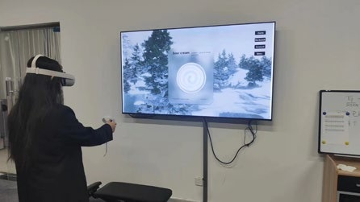
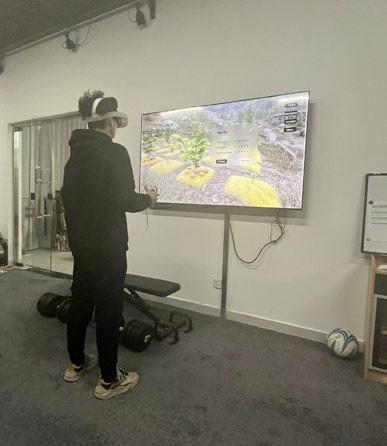
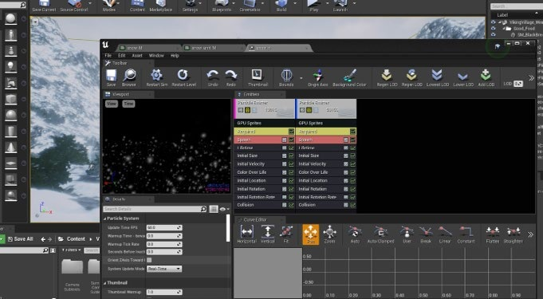
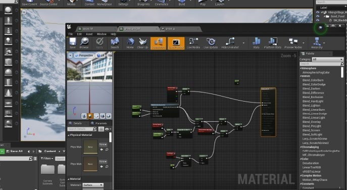
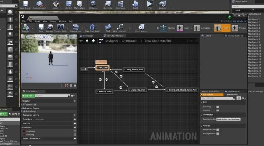
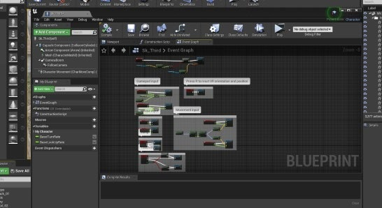
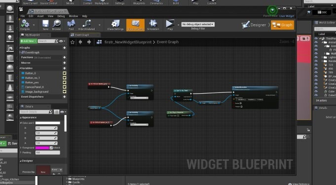

VR audio · Interactive storytelling
Taste of Redemption
A world you navigate by listening.
Production · Sound design
Unreal Engine · Spatial sound · Interaction design

The project
A world you navigate by listening.
In a village shaped by war, a young cook learns that preparing a meal can be an act of care. Taste of Redemption uses everyday interactions—finding water, gathering ingredients, and cooking—to bring a human story into an immersive space.
Listen before you act.
Sound carries information as well as atmosphere. While gathering ingredients, the player can listen for nearby activity and recognize danger, including a wild boar. Real-time sound positioning makes listening an active part of navigating the environment.
Keep the world believable.
The audio direction favors recognizable, realistic sounds. Environmental detail establishes place, while music supports the cultural atmosphere and emotional context. The intention is to preserve the seriousness of the story without losing the curiosity of exploration.
Connect each part of the experience.
The interaction flow links finding ingredients, checking them, preparing food, cooking, and evaluation. The engineering gallery documents the Unreal project across animation, materials, interface widgets, and Blueprint logic.
Inside the work
From idea to implementation.
Full-frame project screenshots, code excerpts, and process documentation. Select any image to inspect it at its original size.















See & hear